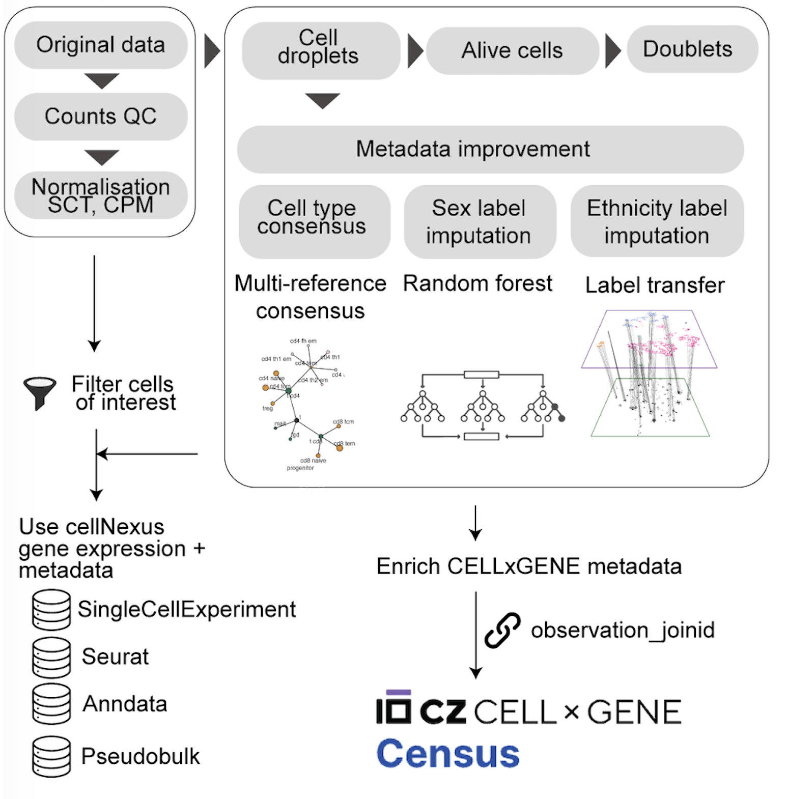
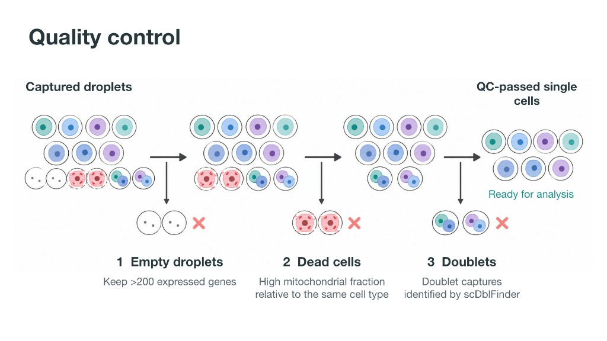
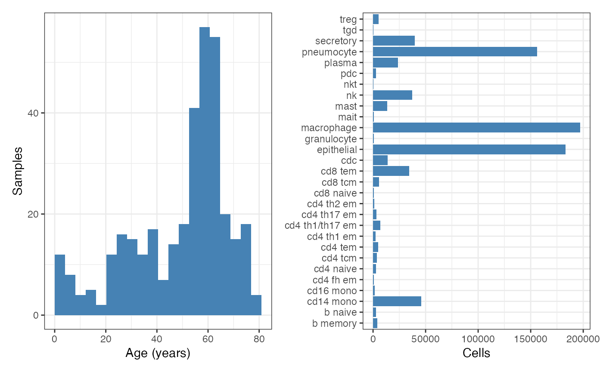

This page is the script for the first block. Run the code in your R session, in order.
This practice takes Human Cell Atlas data from CELLxGENE. Each study is a table of measurements at single cell level (one row per cell). cellNexus makes that query reusable and fast at the sample level. It also adds three cell-type labels with SingleR, using the Blueprint, Monaco, and Azimuth references. A harmonisation step then combines those three labels into one unified cell-type label for every cell. The diagram below shows the preprocessing steps, starting from the original CELLxGENE data.

Setup
get_metadata() returns a lazy DuckDB table. Filters stay
in the query until something collects the rows, which is what makes an
atlas of this size practical to subset.
metadata <- get_metadata() |>
keep_quality_cells()
metadata## # Source: SQL [?? x 33]
## # Database: DuckDB 1.4.3 [unknown@Linux 5.14.0-570.123.1.el9_6.x86_64:R 4.5.3/:memory:]
## cell_id observation_joinid dataset_id sample_id donor_id feature_count
## <dbl> <chr> <chr> <chr> <chr> <int>
## 1 7951 V^DVv&wmix ca46ffe6-0a26-4d… 86fbf754… Hs254 28675
## 2 10537 +P10$OJbtq ca46ffe6-0a26-4d… 86fbf754… Hs254 28675
## 3 4681 `rtxaAa~)4 ca46ffe6-0a26-4d… 86fbf754… Hs254 28675
## 4 10538 YTZT;WA*H1 ca46ffe6-0a26-4d… 86fbf754… Hs254 28675
## 5 11685 q6&?h```1s ca46ffe6-0a26-4d… 86fbf754… Hs254 28675
## 6 10539 {Ij`DT8SD? ca46ffe6-0a26-4d… 86fbf754… Hs254 28675
## 7 4682 s1e`j)^y54 ca46ffe6-0a26-4d… 86fbf754… Hs254 28675
## 8 4683 0G5XsAaJ&m ca46ffe6-0a26-4d… 86fbf754… Hs254 28675
## 9 10540 GPsK`oVmW= ca46ffe6-0a26-4d… 86fbf754… Hs254 28675
## 10 10541 <iPo(ac}Y) ca46ffe6-0a26-4d… 86fbf754… Hs254 28675
## # ℹ more rows
## # ℹ 27 more variables: age_days <int>, nFeature_expressed_in_sample <int>,
## # nCount_RNA <dbl>, empty_droplet <lgl>, cell_type_unified_ensemble <chr>,
## # is_immune <lgl>, subsets_Mito_percent <int>, subsets_Ribo_percent <int>,
## # high_mitochondrion <lgl>, high_ribosome <lgl>, alive <lgl>,
## # scDblFinder.class <chr>, file_id_cellNexus_single_cell <chr>,
## # file_id_cellNexus_pseudobulk <chr>, count_upper_bound <dbl>, …keep_quality_cells() applies one gate and filters out
bad quality cells from every sample.

- An empty droplet is liquid captured with almost no cell in it. It still produces a few gene measurements, mostly background. Counting it as a cell inflates the number of cells and adds noise.
- A dead cell is detected by a high mitochondrial percentage.
- A doublet is two cells captured together. Their measurements are mixed, so the row can look like a cell type that does not exist.
The same checks are computed for each sample. Detailed information on the procedure is the cellNexus quality-control steps.
Choose cells by cell type
cell_type_unified_ensemble is the harmonised label
(multi-reference consensus annotation). age_days and
imputed_ethnicity are sample-level fields.
Exploring the harmonised cell types in the atlas.
metadata |>
dplyr::distinct(cell_type_unified_ensemble) |>
dplyr::arrange(cell_type_unified_ensemble)## # Source: SQL [?? x 1]
## # Database: DuckDB 1.4.3 [unknown@Linux 5.14.0-570.123.1.el9_6.x86_64:R 4.5.3/:memory:]
## # Ordered by: cell_type_unified_ensemble
## cell_type_unified_ensemble
## <chr>
## 1 Unknown
## 2 b
## 3 b memory
## 4 b naive
## 5 blood
## 6 bone
## 7 cartilage
## 8 cd14 mono
## 9 cd16 mono
## 10 cd4 fh em
## # ℹ more rowsFiltering the atlas by epithelial cells and exploring the imputed ethnicities of the donors.
metadata |>
dplyr::filter(cell_type_unified_ensemble == "epithelial") |>
dplyr::distinct(donor_id, imputed_ethnicity) |>
dplyr::count(imputed_ethnicity, sort = TRUE)## # Source: SQL [?? x 2]
## # Database: DuckDB 1.4.3 [unknown@Linux 5.14.0-570.123.1.el9_6.x86_64:R 4.5.3/:memory:]
## # Ordered by: desc(n)
## imputed_ethnicity n
## <chr> <dbl>
## 1 European 1017
## 2 unknown 804
## 3 African American 77
## 4 African 76
## 5 East Asian 49
## 6 Han Chinese 39
## 7 South Asian 27
## 8 Hispanic or Latin American 26
## 9 Hispanic/Latin American 15
## 10 British 14
## # ℹ more rowsExercise 1. Count cells per
cell_type_unified_ensemblefor donors older than 50 years (age_days > 50 * 365). Which labels are rare enough that a proportion estimated from 50 cells would be mostly sampling noise?
Solution
library(cellNexus)
library(dplyr)
get_metadata() |>
keep_quality_cells() |>
dplyr::filter(age_days > 50 * 365) |>
dplyr::count(cell_type_unified_ensemble, sort = TRUE)A label with a few dozen cells across the whole atlas will have a very wide composition interval. Drop it from the cell-type list, or accept that its estimate is descriptive.
This case study uses nine respiratory reference studies in
particular. join_census_tissue() appends CELLxGENE Census
demographic annotations such as tissue,
disease, sex, age_days, etc to
the metadata.
## [1] "9f222629-9e39-47d0-b83f-e08d610c7479"
## [2] "093d3bfe-6f0f-4ac0-a7a1-829f94d0a49f"
## [3] "8c42cfd0-0b0a-46d5-910c-fc833d83c45e"
## [4] "53d208b0-2cfd-4366-9866-c3c6114081bc"
## [5] "3de0ad6d-4378-4f62-b37b-ec0b75a50d94"
## [6] "d8da613f-e681-4c69-b463-e94f5e66847f"
## [7] "e04daea4-4412-45b5-989e-76a9be070a89"
## [8] "2adb1f8a-a6b1-4909-8ee8-484814e2d4bf"
## [9] "2672b679-8048-4f5e-9786-f1b196ccfd08"Query metadata by tissue
dataset_ids <- respiratory_dataset_ids()
metadata_respiratory <- metadata |>
dplyr::filter(dataset_id %in% dataset_ids) |>
join_census_tissue()
metadata_respiratory |>
dplyr::count(tissue, sort = TRUE)## # Source: SQL [?? x 2]
## # Database: DuckDB 1.4.3 [unknown@Linux 5.14.0-570.123.1.el9_6.x86_64:R 4.5.3/:memory:]
## # Ordered by: desc(n)
## tissue n
## <chr> <dbl>
## 1 lung 1453396
## 2 lung parenchyma 306390
## 3 respiratory airway 267309
## 4 nose 105067
## 5 blood 64404
## 6 kidney 53946
## 7 spleen 43999
## 8 trachea 43708
## 9 adrenal gland 43160
## 10 lower lobe of left lung 42510
## # ℹ more rowsQuery metadata by disease
metadata_respiratory |>
dplyr::count(disease, sort = TRUE)## # Source: SQL [?? x 2]
## # Database: DuckDB 1.4.3 [unknown@Linux 5.14.0-570.123.1.el9_6.x86_64:R 4.5.3/:memory:]
## # Ordered by: desc(n)
## disease n
## <chr> <dbl>
## 1 normal 2251070
## 2 COVID-19 355118
## 3 pulmonary fibrosis 246542
## 4 chronic obstructive pulmonary disease 62757
## 5 interstitial lung disease 60327
## 6 lung adenocarcinoma 56717
## 7 pneumonia 27890
## 8 chronic rhinitis 26049
## 9 lung large cell carcinoma 19127
## 10 squamous cell lung carcinoma 18509
## 11 cystic fibrosis 16194
## 12 lymphangioleiomyomatosis 11970
## 13 hypersensitivity pneumonitis 9774
## 14 pleomorphic carcinoma 9213
## 15 non-specific interstitial pneumonia 8037
## 16 pulmonary sarcoidosis 4611Build the respiratory ageing cohort
Immune and epithelial cell types are queried. Age is restricted to donors from 1 year up to 80 years, which drops perinatal samples and donors who would fall outside the age bins.
cell_types_query <- c(immune_cell_types(), epithelial_cell_types())
obs_lung <- get_metadata() |>
keep_quality_cells() |>
dplyr::filter(
dataset_id %in% dataset_ids,
cell_type_unified_ensemble %in% cell_types_query,
age_days >= 365,
age_days < 80 * 365
) |>
join_census_tissue() |>
annotate_cell_nexus(min_cells_per_sample = 50)
obs_lung |>
dplyr::count(cell_type_unified_ensemble, name = "n_cells") |>
dplyr::arrange(dplyr::desc(n_cells))## # A tibble: 29 × 2
## cell_type_unified_ensemble n_cells
## <chr> <int>
## 1 macrophage 196975
## 2 epithelial 183063
## 3 pneumocyte 156299
## 4 cd14 mono 45990
## 5 secretory 39620
## 6 nk 37230
## 7 cd8 tem 34201
## 8 plasma 23810
## 9 cdc 13773
## 10 mast 13578
## # ℹ 19 more rowsjoin_census_tissue() attaches Census
tissue. annotate_cell_nexus() keeps the
respiratory labels, collects the query, derives the age variables, drops
samples with fewer than 50 cells, and de-duplicates on
observation_joinid. Every cell of every retained sample is
kept. sccomp conditions on each sample’s total, and the
expression model carries library size as a covariate, so equal-size
subsampling would throw away precision.
age_binary is TRUE for donors older than 50
years. age_bin is the same split, labelled for plots. One
encoding means the composition model and the expression model contrast
the same donors. The boundary is a modelling choice: report it, and
check that both sides are populated.
Inspect the cohort before modelling
Look at the age histogram and the cell-type bar chart before fitting a model. Both age classes should contain donors. Ages clumped into two distant groups will make a continuous age slope rest on whichever studies sit at the extremes. A cell type with only a handful of cells will have an uninformative composition interval.
p_age <- obs_lung |>
dplyr::distinct(sample_id, age_years) |>
ggplot(aes(age_years)) +
geom_histogram(bins = 20, fill = "steelblue") +
labs(x = "Age (years)", y = "Samples")
p_types <- obs_lung |>
dplyr::count(cell_type_unified_ensemble, name = "n_cells") |>
ggplot(aes(cell_type_unified_ensemble, n_cells)) +
geom_col(fill = "steelblue") +
coord_flip() +
labs(x = NULL, y = "Cells")
p_age + p_types & theme_bw()
Exercise 2. How many distinct samples fall in each
age_bin?
Solution
Both bins should contain donors. A bin with a handful of samples
cannot support the age term once dataset_id is in the
model.
Exercise 3. Cross-tabulate distinct samples by
dataset_idandage_binary. Which studies contain donors of both age classes? A study that contains only one class cannot separate age from study, and both models below includedataset_id.
Solution
obs_lung |>
dplyr::distinct(sample_id, dataset_id, age_binary) |>
dplyr::count(dataset_id, age_binary) |>
tidyr::pivot_wider(names_from = age_binary, values_from = n, values_fill = 0)A study with a zero in either age class does not identify an age
effect on its own. The fixed dataset_id term uses the
studies that contain both classes.
Keep this R session open. The next page uses
obs_lung.
Next: Explore and visualise.